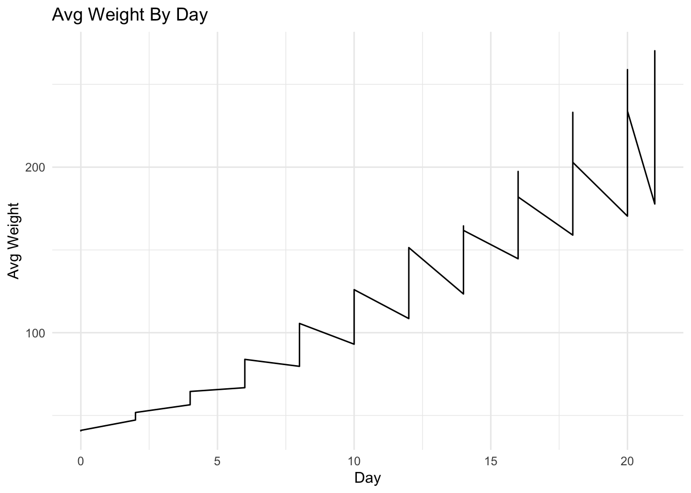

# CORE packages used in lecture for data manipulation
library(tidyverse) # dplyr, tidyr, ggplot2, readr, tibble, etc.
library(lubridate) # date tools (we will create a date column)
library(scales) # formatting numbers in plots/tables
data("ChickWeight")
cw_raw <- as_tibble(ChickWeight)HW1: Data Manipulation
0. Instructions (READ FIRST)
- Download the
HW1.Rmdfile from Brightspace. - Move
HW1.Rmdinto our class R project folder. - Open
HW1.Rmdin RStudio. - Fill in your answers directly in
HW1.Rmd. - Knit
HW1.Rmd(this will createHW1.html). - Submit both
HW1.RmdandHW1.htmlto Brightspace. - Due 02/22/26.
1. Business scenario
Suppose you work for an animal nutrition company that sells 4 feed formulas (Diet 1–4).
Your manager might ask: Which diet produces the largest average weight gain from day 0 to day 21, or other related questions.
You will try to answer these questions using tidy data manipulation and clear visuals.
2. Setup and data load with base R (don’t change code in this section)
3. Check data structure
Instruction:
- Use a function to check the head of
cw_raw.
So, you are expected to see the original variables below:
weight: chick body weight (grams)Time: time in daysChick: chick IDDiet: diet group (1–4)
### Insert your code below
head(cw_raw)# A tibble: 6 × 4
weight Time Chick Diet
<dbl> <dbl> <ord> <fct>
1 42 0 1 1
2 51 2 1 1
3 59 4 1 1
4 64 6 1 1
5 76 8 1 1
6 93 10 1 1 4. Rename and type-clean
Instruction:
Create cw with these changes:
- rename below variables
- rename
Time→day(hint: use therename()function; if you are unsure about the parameters, run?renamein the Console to open the Help page in RStudio) - rename
Diet→diet - rename
Chick→chick
- rename
- mutate below variables
- convert
chickto character (so it behaves like an ID) - convert
dietto factor
- convert
- arrange by
diet,chick,day - check the head of the
cwdata
### Insert your code below
cw <- cw_raw %>%
rename(day = Time) %>%
rename(diet = Diet) %>%
rename(chick = Chick) %>%
mutate(chick = as.character(chick)) %>%
mutate(diet = as.factor(diet)) %>%
arrange(diet, chick, day)
head(cw)# A tibble: 6 × 4
weight day chick diet
<dbl> <dbl> <chr> <fct>
1 42 0 1 1
2 51 2 1 1
3 59 4 1 1
4 64 6 1 1
5 76 8 1 1
6 93 10 1 1 5. Compute average weight by diet and day
Instruction: Create diet_curve dataset:
- group by
dietandday - summarise the information below (drop the groups at the end)
- compute new variables:
avg_weight(mean),sd_weight(standard deviation), andn
- compute new variables:
- mutate
se = sd_weight / sqrt(n) - check the head of the
diet_curvedata
### Insert your code below
diet_curve <- cw %>%
group_by(diet, day) %>%
summarise(
avg_weight = mean(weight),
sd_weight = sd(weight),
n = n(),
.groups = "drop") %>%
mutate(se = sd_weight / sqrt(n))
head(diet_curve)# A tibble: 6 × 6
diet day avg_weight sd_weight n se
<fct> <dbl> <dbl> <dbl> <int> <dbl>
1 1 0 41.4 0.995 20 0.222
2 1 2 47.2 4.28 20 0.957
3 1 4 56.5 4.13 19 0.947
4 1 6 66.8 7.76 19 1.78
5 1 8 79.7 13.8 19 3.16
6 1 10 93.1 22.5 19 5.17 6. Plot growth curves based on diet_curve
Instruction: Make a line chart:
- x =
day - y =
avg_weight - color =
diet - line chart
- include points (hint: use
geom_point()) - y-axis scale with labels
- in
labs(), include a clear title and axis labels - use
theme_minimal()
### Insert your code below
diet_curve %>%
ggplot(aes(x = day, y = avg_weight)) +
geom_line() +
scale_y_continuous(labels = label_number()) +
labs(
x = "Day",
y = "Avg Weight",
title = "Avg Weight By Day"
) +
theme_minimal()
7. Create a synthetic date
In lecture, we practiced creating date columns using lubridate. Here we create a synthetic calendar date starting at 2026-01-01, using cw data at Section 4.
Instruction:
- define
start_dateas the date of 2026-01-01. - using pipe operator update
cwdataset, and mutate thedatevariable usingstart_dateandday(make suredayis converted to adays()format). - check the head of the
cwdata again.
### insert your code below
start_date <- as.Date("2026-01-01")
cw |>
mutate(date = start_date + days(day))# A tibble: 578 × 5
weight day chick diet date
<dbl> <dbl> <chr> <fct> <date>
1 42 0 1 1 2026-01-01
2 51 2 1 1 2026-01-03
3 59 4 1 1 2026-01-05
4 64 6 1 1 2026-01-07
5 76 8 1 1 2026-01-09
6 93 10 1 1 2026-01-11
7 106 12 1 1 2026-01-13
8 125 14 1 1 2026-01-15
9 149 16 1 1 2026-01-17
10 171 18 1 1 2026-01-19
# ℹ 568 more rowshead(cw)# A tibble: 6 × 4
weight day chick diet
<dbl> <dbl> <chr> <fct>
1 42 0 1 1
2 51 2 1 1
3 59 4 1 1
4 64 6 1 1
5 76 8 1 1
6 93 10 1 1 8. Keep chicks with the full treatment period
Instruction: Some chicks have missing days; keep only chicks that have both day 0 and day 21.
- continue update the
cwdataset. - group by
chick. - filter to keep only chicks whose
dayvalues include both 0 and 21 (hint: useall(c(0, 21) %in% day)to return a single logical value). - ungroup.
### insert your code below
cw %>%
group_by(chick) %>%
filter(all(c(0, 21) %in% day)) %>%
ungroup()# A tibble: 540 × 4
weight day chick diet
<dbl> <dbl> <chr> <fct>
1 42 0 1 1
2 51 2 1 1
3 59 4 1 1
4 64 6 1 1
5 76 8 1 1
6 93 10 1 1
7 106 12 1 1
8 125 14 1 1
9 149 16 1 1
10 171 18 1 1
# ℹ 530 more rows9. Create a per-chick-diet summary table
Instruction: Create chick_growth with one row per chick and diet:
- name this summary dataset
chick_growthbased oncw. - group by
chickanddiet. - summarise two weight variables at day 0 and 21 (drop the groups at the end):
w0= weight at day 0 (hint:new_variable = weight[condition_for_day_0])w21= weight at day 21
- mutate two variables for gain and percent gain:
gain_0_21 = w21 - w0pct_gain_0_21 = (w21 / w0) - 1
- arrange/order the
dietand descending order forgain_0_21 - check the head of
chick_growthwith 10 observations.
### insert your code below
chick_growth <- cw %>%
group_by(chick, diet) %>%
summarise(
w0 = weight[day == 0],
w21 = weight[day == 21],
.groups = "drop"
) %>%
mutate(gain_0_21 = w21 - w0,
pct_gain_0_21 = (w21 / w0) - 1) %>%
arrange(desc(gain_0_21))Warning: Returning more (or less) than 1 row per `summarise()` group was deprecated in
dplyr 1.1.0.
ℹ Please use `reframe()` instead.
ℹ When switching from `summarise()` to `reframe()`, remember that `reframe()`
always returns an ungrouped data frame and adjust accordingly.head(chick_growth)# A tibble: 6 × 6
chick diet w0 w21 gain_0_21 pct_gain_0_21
<chr> <fct> <dbl> <dbl> <dbl> <dbl>
1 35 3 41 373 332 8.10
2 34 3 41 341 300 7.32
3 21 2 40 331 291 7.28
4 48 4 39 322 283 7.26
5 40 3 41 321 280 6.83
6 29 2 39 309 270 6.9210. Diet-level KPI table
Instruction: Create diet_kpis with one row per diet based on chick_growth:
- name this summary dataset
diet_kpisbased onchick_growth. - group by
diet. - summarise the information below (drop the groups at the end):
n_chicks: number of chicks per dietavg_gain: mean ofgain_0_21med_gain: median ofgain_0_21sd_gain: standard deviation ofgain_0_21avg_pct_gain: mean ofpct_gain_0_21
- sort by
avg_gain(descending). - check the head of
diet_kpis.
### insert your code below
diet_kpis <- chick_growth %>%
group_by(diet) %>%
summarise(
n_chicks = n(),
avg_gain = mean(gain_0_21),
med_gain = median(gain_0_21),
sd_gain = sd(gain_0_21),
avg_pct_gain = mean(pct_gain_0_21),
.groups = "drop") %>%
arrange(desc(avg_gain))
head(diet_kpis)# A tibble: 4 × 6
diet n_chicks avg_gain med_gain sd_gain avg_pct_gain
<fct> <int> <dbl> <dbl> <dbl> <dbl>
1 3 10 230. 240. 71.1 5.61
2 4 9 198. 197 43.9 4.85
3 2 10 174 174. 79.0 4.32
4 1 16 136. 124 58.9 3.2811. Written takeaway
In 2–4 sentences, conclude the data analysis above (write your paragraph below): # Throughout this data analysis, I looked at the growth trend of chicks over 21 days. Additionally, the chicks were segmented into 4 different diets, where effects on weight gain were analyzed. The average weight gain for chicks on diet 1 = 136 , diet 2 = 174, diet 3 = 229.5, and diet 4 = 197.67 Diet 3 had the most significant weight gain.